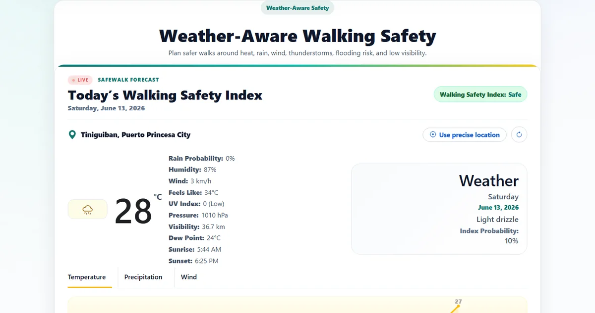

2021 — Present
College
Bachelor of Science in Information Technology
Palawan State University
Expected graduation: To be confirmedAvailable for opportunities
BSIT Student Full-Stack Web Developer Django & React Responsible AI User
I build practical web applications that address real-world needs. My work includes deployed safety platforms and an independently developed intellectual property management system using Django, React, JavaScript, databases, GitHub, Vercel, and modern development tools.
01 Portfolio 2026
01 / About
I believe technology is at its best when it makes complex things clearer, faster, and more useful.
I am a BSIT student and aspiring full-stack developer focused on building practical, user-centered systems. I developed SafeWalk Intelligence to support weather-aware walking safety and am independently building an Intellectual Property Management System with role-based workflows, document management, and structured evaluation processes.
I work with HTML, CSS, JavaScript, React, Python, Django, databases, GitHub, and Vercel. I also use AI tools responsibly for research, debugging, documentation, productivity, and idea exploration while reviewing generated output and understanding the logic behind each implementation.
02 / Education
Palawan State University
Expected graduation: To be confirmedRelevant coursework
03 / Capabilities
A growing set of technical and professional strengths, shaped by education, curiosity, and hands-on exploration.
Building responsive interfaces and interactive browser experiences.
Developing application logic, data structures, and server-side workflows.
Structuring application data and working with managed database services.
Managing source code, deployment, debugging, and day-to-day development.
Using AI as a reviewed support tool for learning, research, and development tasks.
Exploring visual workflow automation for connecting applications, data, and repetitive processes.
Supporting reliable delivery, collaboration, and continued professional growth.
AI Literacy
I use AI tools as development and learning assistants for brainstorming, technical research, debugging, documentation, and repetitive tasks. I review generated output, test suggested solutions, verify important information, and study the underlying logic before including it in my work. AI supports my workflow, but technical decisions, implementation, and accountability remain my responsibility.
Uses AI to understand technical concepts, compare approaches, and support continuous learning.
Analyzes errors and explores fixes while still testing and verifying each proposed solution.
Improves documentation, planning, writing, task organization, and development workflow.
Reviews generated answers, checks logic, avoids blind copying, and uses AI ethically.
Languages
04 / Selected Work
Real-world web applications demonstrating practical problem-solving, independent development, and a growing full-stack skill set.

A deployed web application that helps users make safer walking decisions using location-aware weather conditions, safety indicators, and route-related insights. I worked on the interface, Django application logic, weather-data integration, and deployment.
A deployed prototype of an independently developed Django system for managing intellectual property applications, supporting documents, user roles, evaluations, and approval workflows. The project focuses on backend architecture, relational database design, access control, and maintainable full-stack development.
Current progress
Authentication planning / implementation Database schema design Role-based workflow structure Evaluation workflow in progress Document management planningCase Study / SafeWalk Intelligence
Weather conditions can change the safety of a walking route, but raw forecasts do not always explain the practical risk.
Built the interface and Django application flow, integrated weather information, and deployed the working experience.
A live safety-focused application that presents weather conditions as clearer walking-safety information.
Case Study / Intellectual Property Management System
IP applications involve documents, role-based access, evaluations, and approvals that require consistent tracking.
Planning the relational schema, authentication, user roles, document handling, and evaluation workflow in Django.
Strengthening backend architecture, access control, database design, and maintainable full-stack development.
05 / Contact
I’m open to internships, entry-level IT opportunities, collaborations, and conversations about technology.